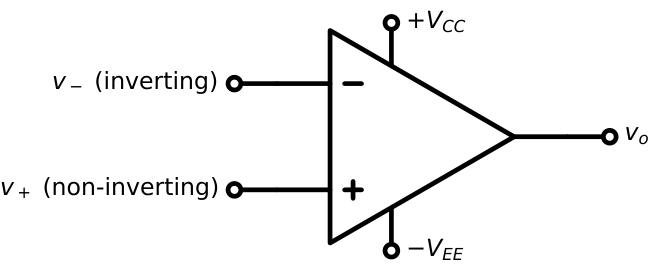
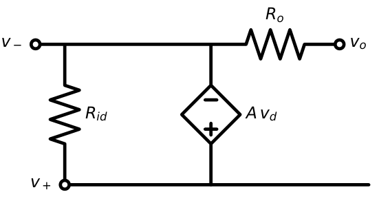
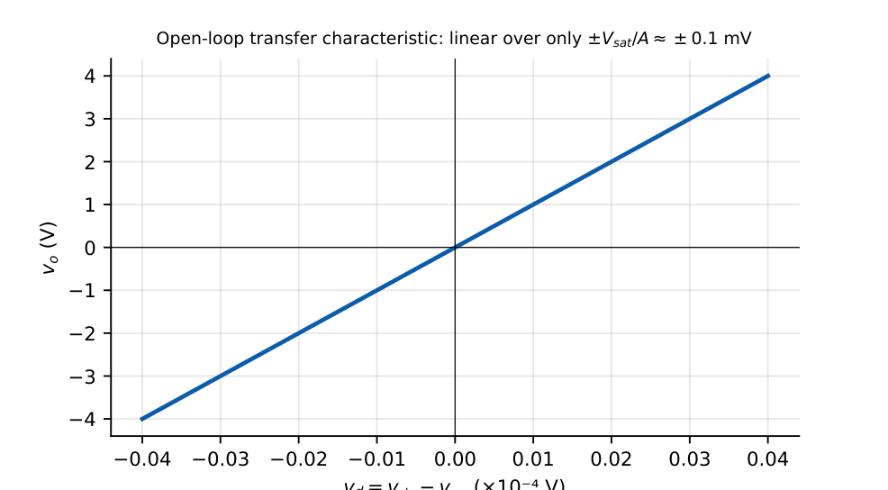
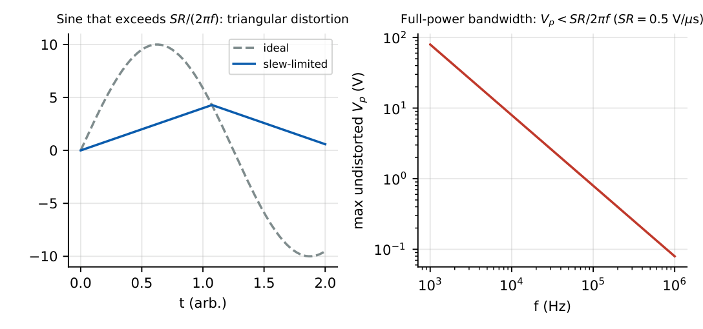
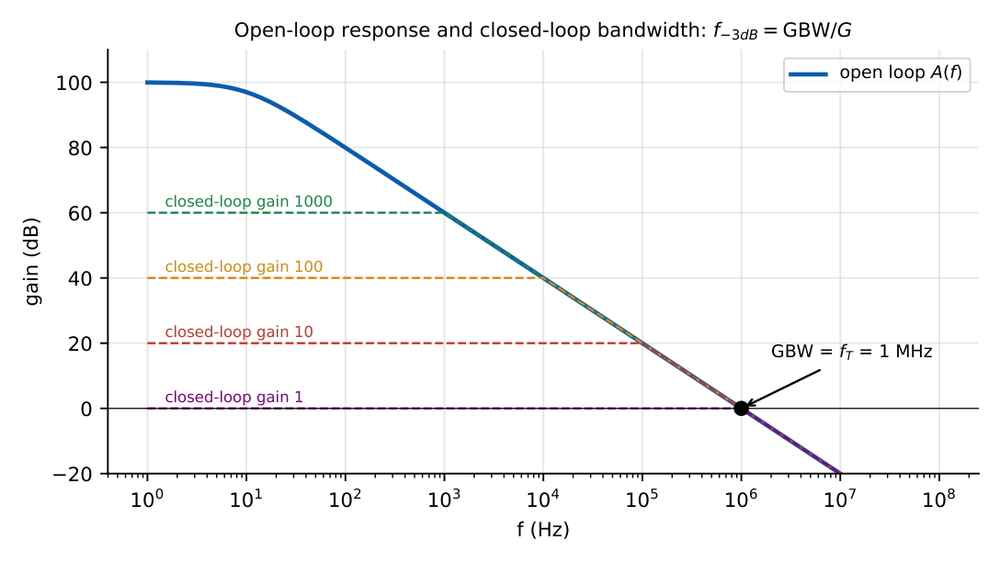

Operational Amplifier Fundamentals
In this chapter
18.1 Ideal op-amp
An operational amplifier is a high-gain differential amplifier with a single-ended output, designed to be used with negative feedback.

| Parameter | Ideal | Practical (e.g. 741) |
|---|---|---|
| Open-loop gain \(A\) | \(\infty\) | \(10^5\) (100 dB) |
| Input resistance \(R_{id}\) | \(\infty\) | 2 M\(\Omega\) (BJT), \(10^{12}\ \Omega\) (FET input) |
| Output resistance \(R_o\) | 0 | 75 \(\Omega\) |
| Bandwidth | \(\infty\) | GBW = 1 MHz |
| CMRR | \(\infty\) | 90 dB |
| Offset voltage \(V_{OS}\) | 0 | 1–5 mV |
| Bias current \(I_B\) | 0 | 80 nA |
| Slew rate | \(\infty\) | 0.5 V/\(\mu\)s |
18.2 Practical op-amp


The output saturates \(1\)–\(2\) V below the supply rails (\(V_{sat}\approx\pm13\) V for \(\pm15\) V supplies).
18.3 Virtual short
With negative feedback the output is finite (\(|v_o|<V_{sat}\)), so \(v_d=v_o/A\to0\):
1. \(v_+=v_-\) (virtual short: zero differential input voltage).
2. \(i_+=i_-=0\) (no current flows into the input terminals).
The virtual short applies only when the feedback loop is negative. In a comparator or Schmitt trigger (open loop or positive feedback), \(v_+\ne v_-\) and the output is at \(\pm V_{sat}\).
18.4 Virtual ground
When the non-inverting input is grounded, the virtual short forces \(v_-=0\): the inverting terminal is a virtual ground: at 0 V but drawing no current (unlike a real ground). Consequently the input resistance of an inverting amplifier is \(R_1\), and summing of currents at that node is easy.
18.5 Open-loop gain
The open-loop gain has a dominant pole at \(f_p\) (\(\approx10\) Hz for a 741): \[A(f)=\frac{A_0}{1+jf/f_p},\qquad A_0=10^5.\] With feedback fraction \(\beta\): closed-loop gain \(A_{CL}=\dfrac{A}{1+A\beta}\to\dfrac1\beta\) when \(A\beta\gg1\).
Non-inverting amplifier with \(\beta=1/10\) (nominal gain 10) and \(A=10^5\): \(A_{CL}=1/(10^{-5}+0.1)=9.9990\), an error of \(0.01\%\). With \(A=1000\): \(9.901\) (error 1%).
18.6 Input and output resistance
Feedback modifies impedances: series mixing at the input multiplies \(R_{in}\) by \((1+A\beta)\); shunt sampling at the output divides \(R_{out}\) by \((1+A\beta)\).
Non-inverting: \(R_{in}=R_{id}(1+A\beta)\), \(R_{out}=\dfrac{R_o}{1+A\beta}\) Inverting: \(R_{in}\approx R_1\), \(R_{out}\approx\dfrac{R_o}{1+A\beta}\)
18.7 Common-mode rejection
\(v_o=A_dv_d+A_{cm}v_{cm}\), \(\mathrm{CMRR}=|A_d/A_{cm}|\); \(v_o=A_d\left(v_d+\dfrac{v_{cm}}{\mathrm{CMRR}}\right)\). A 90 dB CMRR (\(3.16\times10^4\)) means a \(1\) V common-mode signal appears as a \(32\ \mu\)V differential error.
18.8 Offset voltage
Input mismatch makes \(v_o\ne0\) at \(v_i=0\). Model it as a small DC source \(V_{OS}\) in series with one input; the output offset is amplified by the noise gain: \[V_{o,OS}=\left(1+\frac{R_f}{R_1}\right)V_{OS}\quad\text{(both inverting and non-inverting amplifiers)}.\]
\(V_{OS}=2\) mV, \(R_f=100\) k, \(R_1=1\) k: \(V_{o,OS}=101\times2=202\) mV. Trim with the offset-null pins or add a series capacitor to block DC.
18.9 Bias and offset currents
Bias current \(I_B=(I_{B+}+I_{B-})/2\); offset current \(I_{OS}=|I_{B+}-I_{B-}|\). In an inverting amplifier the bias current through \(R_f\) gives \(V_o=I_{B-}R_f\).
Compensation: place \(R_c=R_1\|R_f\) in series with the non-inverting input; then \(V_{o,I}=\pm I_{OS}R_f\) instead of \(I_BR_f\).
\(I_B=80\) nA, \(R_f=100\) k\(\Omega\): \(V_o=8\) mV without compensation. With \(R_c\) and \(I_{OS}=20\) nA: \(2\) mV.
18.10 Slew rate
The maximum rate of change of the output, limited by the internal compensation capacitor charging current: \(SR=I_{max}/C_c\). For a sine of peak \(V_p\) and frequency \(f\) the required slope is \(2\pi fV_p\); no distortion if \[2\pi fV_p\le SR\quad\Longleftrightarrow\quad f_{FPBW}=\frac{SR}{2\pi V_p}\ (\text{full-power bandwidth}).\]

\(SR=0.5\) V/\(\mu\)s, \(V_p=10\) V: \(f_{max}=0.5\times10^6/(2\pi\times10)=7.96\) kHz.
Slew-rate distortion depends on amplitude and frequency; small-signal bandwidth (GBW) is a separate limit. A signal can be within the small-signal bandwidth yet slew-limited.
18.11 Gain-bandwidth product

\(\text{GBW}=A_0f_p=f_T\) \(f_{-3\,dB}=\dfrac{\text{GBW}}{|A_{CL}|}\) (non-inverting: noise gain \(1+R_f/R_1\))
GBW \(=1\) MHz. Inverting gain \(-100\) (\(R_f=100\) k, \(R_1=1\) k): noise gain \(=101\), so BW \(\approx9.9\) kHz.
18.12 CMRR and PSRR
\(\mathrm{PSRR}=\Delta V_{supply}/\Delta V_{OS}\) (in dB): how much the offset moves with supply changes (typ. \(30\ \mu\)V/V \(\to\) 90 dB).
18.13 GATE op-amp assumptions
Unless the question specifies otherwise: ideal op-amp, output saturation at \(\pm V_{sat}\) (often \(\pm\) supply), zero offsets and bias currents, infinite CMRR and GBW. State-of-the-art GATE problems then test: (1) gain calculation using virtual short, (2) saturation and clipping, (3) input resistance, and (4) frequency-limited behaviour using GBW and SR.
Q1. An ideal op-amp inverting amplifier has \(R_1=2\) k\(\Omega\), \(R_f=10\) k\(\Omega\). The gain is .
Q2. The input resistance of that amplifier (ideal op-amp) is (A) 2 k\(\Omega\) (B) 10 k\(\Omega\) (C) 12 k\(\Omega\) (D) \(\infty\).
Q3. \(SR=1\) V/\(\mu\)s. A sine of \(5\) V peak can be reproduced without slew distortion up to kHz.
Q4. An op-amp has GBW \(=2\) MHz. In a non-inverting amplifier of gain 20, the bandwidth is kHz.
Q5. An op-amp has CMRR \(=100\) dB. The ratio \(A_d/A_{cm}\) is .
Q6. A non-inverting amplifier of nominal gain 10 uses an op-amp with \(A=1000\). The actual gain is .
Answers: Q1: \(-5\). Q2: (A). Q3: \(10^6/(2\pi\times5)=31.8\) kHz. Q4: \(2\,\mathrm{MHz}/20=100\) kHz. Q5: \(10^5\). Q6: \(1/(1/1000+1/10)=9.90\).
- Find \(f_{-3dB}\) for GBW \(=10\) MHz and a gain of \(-49\) (\(R_f=49\) k, \(R_1=1\) k). [200 kHz]
- \(V_{OS}=5\) mV, non-inverting gain \(=10\). Output offset? [50 mV]
- \(SR=13\) V/\(\mu\)s, \(V_p=10\) V. FPBW? [207 kHz]
- Why is \(R_c=R_1\|R_f\) used? [Equalises the DC resistance seen by each input, so \(I_B\) produce equal drops that cancel]